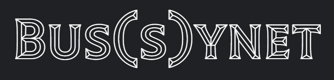

My Top Projects
Bus(s)ynet

Bus(s)ynet to strona odpowiedzialna za zbieranie najnowszych informacji ze świata internetowego biznesu.
W pełni wykonałem backend tej strony, oraz pomagałem przy tworzeniu designów i animacji w JavaScript.
ShareSquare

ShareSquare to nowe social medium, słuzy przedewszystkim do dzielenia sie chwilami, zdjeciami i muzyką, ale posiada tez funkcje sklepu internetowego i wiele innych.
Jestem odpowiedzialny za cały backend tej aplikacji.
Soundly

Soundly to aplikacja do streamowania muzyki. Działa na technologii JavaScript i SQL, które stworzylem sam od podstaw.